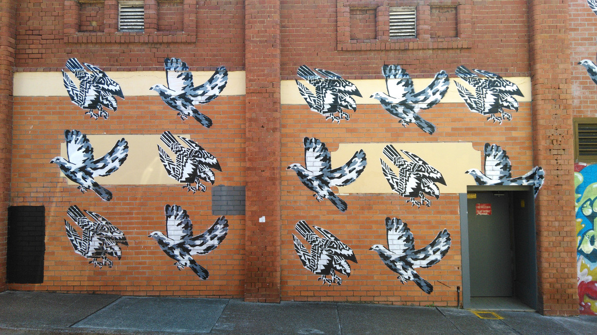

Why I'm choosing project management
I thought I always wanted to be an architect because I like to make things and draw stuff. But I also love maths and physics and I'm proud to say I was very good at maths in high school. So once I graduated from high school, University of Sydney announced a combined bachelor's degree in architecture and engineering and this seemed to be the perfect degree for me. I applied and was fortunate enough to get into the course.
After 5 years of intensely studying, I was able to finally finish my degree last year. Even upon finishing, I was still certain that I wanted to be an architect. So I began my Masters of Architecture straight away - why waste time?
Starting of this year, I worked 4 days a week whilst studying 2 days a week for Masters of Architecture. But I absolutely hated this degree. I was completely demotivated by the end of the first semester and decided to defer the second semester.
I took leave from work during my semester break and travelled to the US for four weeks. I thought it would clear my negativity and motivate me to continue again. But I realised my complete lack of enthusiasm of finishing this degree was unwavering. I could not bring myself to continue to do the same thing that I was doing for the last five years - staying up all night trying to draw random things only to completely change everything the next day. Having pointless theoretical discussions about how architecture is everything and shapes the world (which clearly is not). Dreaming about what it would be like to be the next Le Corbusier. Making boxboard models only to throw them in the bin at the end of the semester.
I wanted more out of life and I didn't want to study something that I did not enjoy.
Whilst I was studying for my masters, I started working in the project management team within my workplace. I thought I would just be gaining valuable experience for my architecture career. However the more and more I worked in this area, the more attractive this career path became.
A couple of weeks ago, I decided to switch career path to project management instead of pursuing architecture. I am unsure whether to pursue Masters of Project Management or pursue a Certificate IV, but I want to continue my education to progress on this career path.
The following are some of the main reasons to justify this decision:
Why project management.
1. I like to design. But more than anything, I like making things happen. And, I believe I have what it takes to be a project manager.
I am able to think creatively as evidenced by my architectural design skills and my side projects. I have the technical knowledge from my engineering education. I also am bloody good at organising things to make things happen which can be seen through the leadership roles that I've taken at university societies.
2. I want to work and live with a purpose.
I want to play a crucial role in delivering big, interesting and creative projects and that's the beauty of project management - that I can, with enough experience. I don't want to be designing houses for one rich person to enjoy, or be pigeonholed to just do the CAD work.
3. I want to deliver projects in a diverse range of industries.
I want to deliver building infrastructure. I want to launch tech softwares. I also want to be capable of providing strategic direction in a company.
4. I like to be responsible and be given autonomy for projects.
I like delivering things from start to finish as evidenced in my side projects. I want to be a leader.
5. Salary for project managers are very good.
Well, at least compared to architects.
I'm excited about this new career path that I'm going to pursue. I'm willing to work hard for it. I am currently in a good position to learn a lot about project management. Hopefully, I'll be able to look back and say that I've worked hard to get to where I am and have had a happy, fulfilling life.